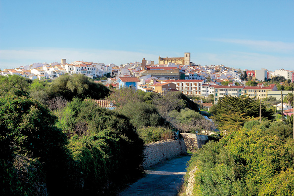
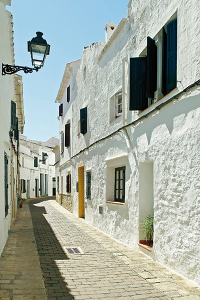
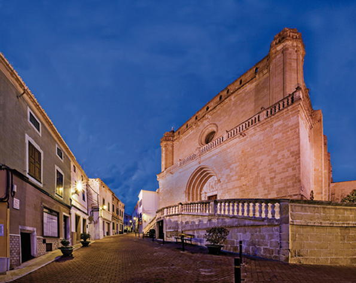

Alaior, ciutat i terme municipal a quatre vents
Si Maó i Ciutadella, com a localitats de referència geogràfica de Menorca, són punts urbans d'evident personalitat portuària, Alaior, que pretén ocupar la tercera posició quant a importància, és la ciutat de les llomes, de les costes i dels miradors a quatre vents. Dit d'una altra manera: Alaior és un enclavament d'orografia en muntanya russa, amunt i avall, molt airejada i d'amplis horitzons sobre els confins del territori insular. L'amenitat dels seus paisatges i de les seves moltes perspectives probablement resulta ser la més simpàtica, neta i oxigenada d'entre totes les que es puguin trobar sobre el mapa de Menorca. És fins i tot possible que en cap dels onze pobles històrics de l'Illa es doni amb tanta nitidesa la característica pròpia d'Alaior com a ciutat enaltida, posada en expansió vertical cap a la volta del cel. I entengui's bé: aquest efecte no té res a veure amb els inhumans gratacels – que no n'hi ha – sinó que més aviat prové de la seva peculiar posició, diguem-ne a l'aguait, a la manera de les talaies.
Alaior, insisteixo, té una part de localitat eminent, en el sentit més precís de l'adjectiu; perquè, en efecte, situa el seu nucli sobre una cúspide que domina amples llunyedars sobre l'entorn. És per això que pot descriure's com la ciutat de Menorca que més torreja: ho fa des d'una trama urbana construïda a través dels segles, primer com a enclavament àrab (Ihalor) i, més tard, cristià (Alaior).
D'aparença àrab, Alaior mostra carrers que serpentegen, angosts i assossegats, amb abundància de cases emblancades. De cristiana, en canvi, exhibeix les agulles dels campanars que apunten cap a la sota celeste. Però, en realitat, s'ha desenvolupat segons una estructura urbana de clar aspecte baixmedieval, això és: un urba-nisme net i apinyat, d'una sinuositat dels carrers que és l'adaptació als perímetres irregulars de les primitives propietats dels horts, àrees de cultiu, corrals o residències dels primers habitants rurals.
Inicialment, se sap que s'originà a partir d'un assentament d'època musulmana a base d'habitacles dispersos als voltants del turó. D'elles, la més destacada era l'alqueria d'Ihalor. Després de la conquesta cristiana de l'Illa l'any 1287, el monarca privatiu del regne de Mallorca, Jaume II, fill del Conqueridor, ordenà la seva taxació i compra per a la Corona, i de seguida arbitrà les normes d'edificació i residència. En poc temps, la vila quedava formalment fundada. D'aquesta manera s'estipulà que “Nos ei ipsam alqueriam vollumus emere et habere ad faciendum ibi popolationem” o, en altres paraules “Volem comprar i adquirir aquella pagesia per construir-hi un poble”. Durant cinc segles, fins al darrer terç del segle XIX, es va mantenir com a població d'economia agrícola i ramadera. Actualment, la seva reminiscència més notable (de pes per al PIB local) és la cooperativa Coinga (1966), dedicada a produccions làcties. Però la industrialització d'Alaior obrí les portes a la manufactura sabatera, amb la que es guanyà el prestigi de ciutat d'emprenedors. Fins a les dècades dels anys seixanta i setanta es donà una concentració de fins a quaranta tallers de calçat, i una nòmina molt plausible d'empresaris de renom. Avui dia amb prou feines queden unes poques fàbriques, alguna de les quals gaudeix de gran projecció internacional, com és el cas de Pons Quintana. Entre la crisi del petroli l'any 1973 i els durs processos de reconversió industrial de l'Espanya dels vuitanta, el model econòmic ha seguit el camí de l'externalització en les modalitats turístiques. En els nostres dies, els seus pols d'explotació se situen en la costa sud del terme. Al seu torn, aquest fenomen de signe econòmic ha provocat l'aparició de nous assentaments de residència urbanística temporal i de residència estable. Ambdues, actuant com a satèl•lits de població, sens dubte han transformat la fisonomia territorial del terme municipal: Cala'n Porter, L'Argentina, Son Vitamina, Son Bou, Sant Jaume i Torre Solí. Segons els últims censos, el conjunt poblacional ens aproxima avui als 10000 habitants.
L'arquitectura patrimonial és predominantment de caràcter religiós; la parròquia de Santa Eulàlia (segle XVII), assentada sobre la pròpia cima de la llegendària alqueria de Ihalor, i San Diego (també del segle XVII), església conventual de franciscans, convertida avui en centre de cultura. A més, a l'extrem nord de la ciutat hi ha l'ermita de Sant Pere, i la capella de Gràcia, al costat de la plaça principal, que es manté fora de culte, encara que es diria que actua de record en pedra d'un complex assistencial d'època moderna (segles XV, XVI i XVII), format per un hospital d'acollida, la capella i la primitiva casa consistorial.
En arquitectura civil, la pràctica totalitat està conformada per edificis d'habitatges unifamiliars de planta, pis i golfes. Destaquen, també, la seu de l'Ajuntament, del segle XVII, i l'antiga casa Salord, del segle XIX, actualment reconvertida en seu de l'extensió universitària de la Universitat de les Illes Balears.Ara bé, les seves millors gales patrimonials són de caràcter prehistòric. Alaior i el seu terme municipal poden atribuir-se una certa capitalitat arqueològica dins del conjunt insular. Ho demostren els espectaculars jaciments de la Torre d'en Galmés (amb el poblat més extens de les Balears) i els admirables nuclis de Torralba d'en Salord, So na Caçana, les grutes de la necròpolis de Calescoves, el poblat d'Alcaidús o la naveta de Rafal Rubí, d'entre una densíssima relació de béns d'interès cultural.
Els alaiorencs tenen fama de ser gent de personalitat hospitalària. Són alegres, ac-tius i enormement laboriosos. Creuen en la cultura com a fonament de prosperitat, i es veuen a si mateixos com a grup de “menorquinitat” genuïna i tradicional. Alaior, com a localitat d’escala en l’eix est-oest de Menorca, adopta una actitud expectant, sempre alerta, vigilant el seu entorn. Així era en l'època de la calçada romana que la travessava; seguí sent-ho amb l’obertura del Camí d'en Kane l'any 1722, durant la Menorca colonial anglesa; i així ho manté en l'actualitat, amb la carretera general (1900) que podria simbolitzar la bandera de la seva obertura constant als quatre vents de l'illa. I més enllà.